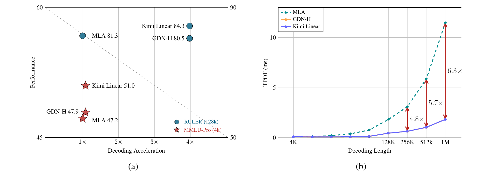
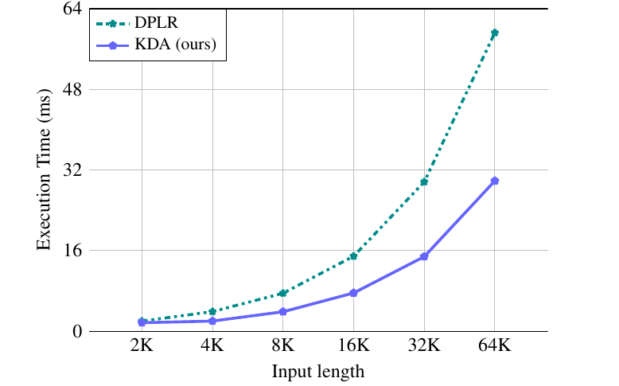
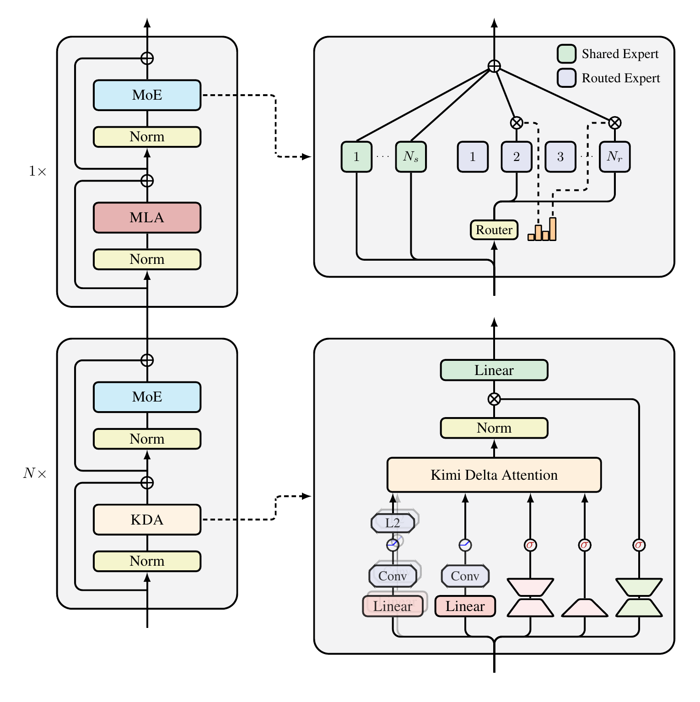
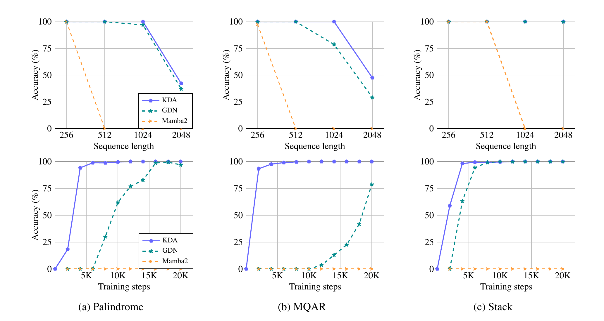
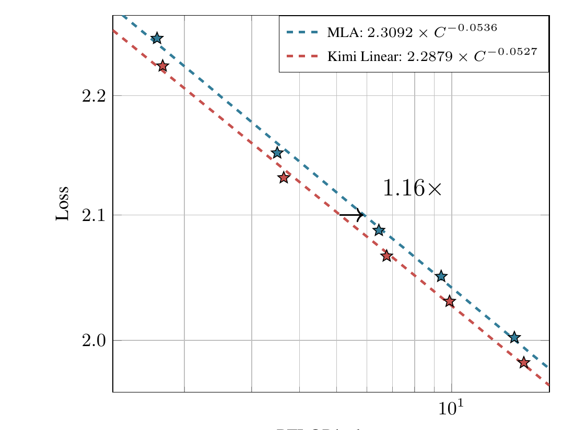
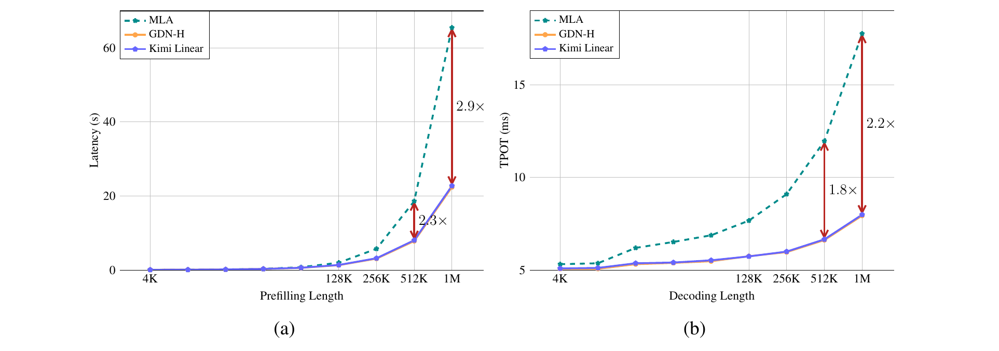
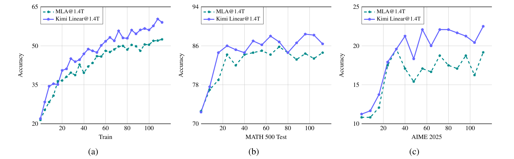

Kimi Linear: An Expressive, Efficient Attention Architecture
一句话：把廉价的线性注意力（固定大小记忆、随长度线性增长的成本）做得足够「聪明」，再用少量全注意力兜底，最终在短上下文、长上下文、RL 后训练三种场景下，都同时赢了质量和效率——这在过去的混合架构里是没做到过的。
核心是 Kimi Delta Attention（KDA）：给 Gated DeltaNet 换上按通道的细粒度遗忘门，并用一个受约束的 DPLR 形式把它做到硬件高效。下文术语首次出现时附英文原词，方便对照原文。本页所有原始图均取自论文 PDF（无 arXiv HTML 版，由 PDF 高清渲染裁剪）。

一句话总结：这张图是全文的「成绩单 + 效率单」，直接说明 Kimi Linear 在质量与速度两个维度上同时压过全注意力。
大模型正在变成需要长时间自主行动的智能体（agent）：要处理超长轨迹、反复调用工具、在推理时反复「想更久」（即 RL 测试时扩展）。这把标准 softmax 注意力的两个老问题彻底放大了：
O(T²)，长序列代价高SKimi Linear 不是凭空冒出来的，它站在一条清晰的演进链上。理解这几条路线「各自强在哪、卡在哪」，才能看懂 KDA 为什么这样设计。下面四张卡片按从弱到强排列：
做法：维护状态 S_t = S_{t-1} + k_t v_tᵀ，输出 o_t = S_tᵀ q_t。从「快权重 / 在线学习」视角看，S 是一张随时间更新的联想记忆表。
卡在哪：这等于在做一个只奖励、不遗忘的目标——旧关联永远累加，状态被无关信息撑爆，长上下文里互相干扰。表达力明显弱于 softmax。
与本文关系：所有后续改进（含 KDA）都是在给这个朴素累加加上「该忘什么、该纠正什么」的判据。
做法：在递推里乘一个衰减因子 α。RetNet 用固定标量衰减；Mamba2 用数据相关的标量衰减；GLA 进一步用按通道的对角门 Diag(α_t)，每个特征维度有自己的遗忘率。
卡在哪：衰减能控制记忆寿命、缓解干扰，但缺少「主动纠错」——它只会按比例淡忘，不会针对性地覆盖写入冲突的旧关联，精确检索仍偏弱。
与本文关系：KDA 的细粒度通道门正是借鉴了 GLA 这一路的「per-channel 衰减」。
做法：DeltaNet 把更新写成 S_t = (I − β_t k_t k_tᵀ) S_{t-1} + β_t k_t v_tᵀ，相当于让记忆朝「k→v 的正确映射」自我修正（rank-1 更新，可分块并行）。Gated DeltaNet（GDN）再叠加一个标量遗忘门。
卡在哪：GDN 的遗忘门是整头共用一个标量（head-wise scalar），无法对不同特征维度区别对待——这正是 KDA 要改的地方。
与本文关系：KDA = GDN + 把标量门换成按通道的对角门。这是本文最核心的一步。
做法：纯线性注意力在「精确复制 / 极长检索」上始终偏弱，于是把线性层与少量全注意力层交错堆叠，兼顾效率与质量。
卡在哪：之前的混合模型要么规模有限、要么评测不全面，没能在公平对比下证明「混合能稳稳超过全注意力」。
与本文关系：Kimi Linear 用层间（inter-layer）3:1 混合 + KDA + NoPE，并在 1.4T token 规模做公平验证，第一次把这件事坐实。
下面一节先用一个分步演示，把「线性注意力 → DeltaNet → GDN → KDA」这条演进链走一遍，你就能直观看到 KDA 到底改了什么。
论文把贡献明确拆成三块，正好对应「算子怎么设计 → 怎么拼成模型 → 怎么证明它真的好」三个层次：
要看懂 KDA 改了什么，最好把它放回演进链里。下面四步，每一步都只在前一步上加一个小改动，记忆状态 S 也随之越来越「会管理自己」。点「下一步」跟着看：
S。简单、线性，但旧信息永远不删。所有这些方法都可以统一写成「衰减旧状态 + 写入新关联」，区别就在遗忘门 A_t 的粒度：从固定标量 → 数据相关标量 → 按通道对角，再叠加 delta 规则的纠错项。KDA 站在这条链的末端。
| 方法 | 遗忘门粒度 | 带 Delta 纠错 | 状态更新规则（简化） |
|---|---|---|---|
| Linear Attn | 无 | 否 | S = S + kvᵀ |
| RetNet | 固定标量 α | 否 | S = αS + βkvᵀ |
| Mamba2 | 数据相关标量 α_t | 否 | S = α_t S + βkvᵀ |
| GLA | 按通道 Diag(α_t) | 否 | S = Diag(α_t)S + kvᵀ |
| GDN | 标量 α_t | 是 | S = (I−βkkᵀ)α_t S + βkvᵀ |
| KDA（本文） | 按通道 Diag(α_t) | 是 | S = (I−βkkᵀ)Diag(α_t)S + βkvᵀ |
表内容整理自原论文 Table（不同注意力的 TTT 视角更新规则），省略了归一化与激活项。KDA 同时拥有「按通道遗忘 + delta 纠错」，这是它表达力的来源。
KDA 的全称是 Kimi Delta Attention。它和 GDN 只差一个改动，但这个改动直击线性注意力的命门——有限状态记忆的利用率。核心对比就在「遗忘门的粒度」：
论文还给了一个很漂亮的视角：这种数据相关、可学习的衰减，本质上是一种「学出来的位置编码」。RoPE 用固定频率的旋转矩阵给不同维度注入位置信息；KDA 的 Diag(α_t) 则是数据相关、逐通道的乘性变换，放松了 RoPE 的正交约束，理论上更灵活——这也是为什么 Kimi Linear 敢对全注意力层「不加任何位置编码（NoPE）」，把位置感知的活儿全交给 KDA（详见「有意思的点」）。
真正落地时，q/k/v 不是直接喂进去的。KDA 在输入侧和输出侧都加了若干轻量组件来提升表达力与稳定性：
细粒度门控好是好，但有个隐患：表达力越强，往往越难算得快。KDA 在表达力上等价于更一般的 DPLR（Diagonal-Plus-Low-Rank，对角 + 低秩）形式 S_t = (D − a_t b_tᵀ)S_{t-1} + k_t v_tᵀ，但通用 DPLR 计算昂贵、难并行。KDA 的高效，来自一个聪明的约束。
a_t 和 b_t 是两个独立向量。KDA 强制令 a_t = β_t k_t、b_t = k_t ⊙ α_t，即都由 k_t 派生。这看似只是个约束，却让 KDA 既保持了 DPLR 级别的细粒度衰减，又更贴近经典 delta 规则、还大幅省掉了冗余计算。
这个约束带来两处实打实的提速（对照论文的 DPLR vs KDA 伪代码）：

一句话总结：KDA 用一个「a=b=k」的约束，在几乎不损失表达力的前提下把内核做到了约 2× 的速度。
# 需要 4 个交互矩阵 Aab,Aak,Aqb,Aqk = zeros(...) for i in range(C): Aqk[..i] = (q_i*k *s1).sum(-1) Aqb[..i] = (q_i*b *s1).sum(-1) Aab[..i] = (a_i*b *s2).sum(-1) Aak[..i] = (a_i*k *s2).sum(-1) ... o1 = Aqk @ v_i o2 = Aqb @ (u+w@S) o3 = (q*g.exp()) @ S S += (k*decay)ᵀ @ v S += (b*decay)ᵀ @ (u+w@S)
# 只需 2 个交互矩阵 Aqk,Akk = zeros(...) for i in range(C): Aqk[..i] = (q_i*k*s1).sum(-1) Akk[..i] = (k_i*k*s2).sum(-1) ... # 输出一步到位 o = (q*g.exp())@S + Aqk@(u−w@S) S = S * g_last.exp() S += (k*decay)ᵀ @ v # 无需第二条 S 更新
对照可见：DPLR 维护 4 个交互矩阵、两条状态更新；KDA 因为 a=b=k 只需 2 个交互矩阵、一条状态更新，输出也合并成一行——这就是约 2× 加速的来源。（伪代码改写自论文 Listing。）
有了高效的 KDA 算子，剩下的问题是怎么拼成一个能打的大模型。Kimi Linear 的骨架沿用 Moonlight，每个 block = 一层「token 混合」+ 一层「MoE 通道混合」。关键在于 token 混合层按 3:1 交错使用 KDA 与全注意力。这张架构图是全文最重要的一张：

一句话总结：大部分层用便宜的 KDA 扛主力，少数 MLA 层负责全局精确检索，MoE 负责扩容量——三者按固定节奏堆叠，既省显存又保质量。
论文专门做了混合比例的消融，结论很干净：
除了主线，有几处设计取舍值得单独拎出来——它们解释了 Kimi Linear 一些「反直觉」的选择。
RoPE 用固定频率的旋转矩阵给每对维度注入相对位置；而 gated delta rule 的累积转移矩阵是数据相关、可学习的，相当于放松了 RoPE 的正交约束，理论上更强。
RoPE 的固定频率还会导致外推（extrapolation）困难（容易过拟合到训练时见过的长度）。把位置感知交给可学习的 KDA，反而更容易扩展上下文窗口。
Kimi Linear 把位置感知的责任全部委托给 KDA 层，MLA 全注意力层用 NoPE。好处有二：① 推理时 MLA 可转成高效的纯 MQA（多查询注意力）；② 长上下文训练更简单，不用调 RoPE 频率基或上 YaRN。
消融显示：Kimi Linear（NoPE）在长上下文上稳定胜过 RoPE 版，因为位置偏置在各层间分布得更均衡，外推更鲁棒。
消融对比了「无门 / Swish 门 / Sigmoid 门」三种输出门：去掉门会掉点；GDN 采用的 Swish 门明显差于 Sigmoid。本文因此全程用 Sigmoid 输出门（含 GDN-H 基线），还能缓解注意力沉降。
启发：在这类线性注意力里，输出门的设计不是细枝末节，值得认真消融。
稀疏注意力（NSA / MoBA / DSA 等）擅长精确检索细粒度历史，但仍要存整份 KV 缓存来做 token 选择，表达上界也只是全注意力。
线性注意力秉持「压缩即智能」，用固定大小状态泛化，配合 delta 规则可获得理论上更强的表达力；弱在检索，但能用状态扩展等手段弥补。
言下之意：两者并不互斥，未来可结合「线性的压缩 + 稀疏的精检」。
一句话：在同样的训练配方与参数量下，Kimi Linear 在预训练、SFT、长上下文、RL 各阶段都稳压全注意力 MLA 与混合 GDN-H 基线，同时把显存和解码速度做到线性注意力级别。下面只挑最核心的几个证据。
在 Palindrome（逆序复制）、MQAR（多查询联想检索）、Stack（栈状态跟踪）三个专门考验记忆的合成任务上，KDA 的细粒度门控优势最直观。

一句话总结：合成任务证明 KDA 的细粒度门控不是纸面优化，而是真的提升了有限状态记忆的检索能力。

一句话总结：scaling law 表明 Kimi Linear 的效率优势是「可规模化」的，不是小模型上的偶然。

一句话总结：上下文越长，线性注意力的固定状态优势越压倒性——这正是 agentic / 长生成场景最需要的。

一句话总结：RL 阶段 Kimi Linear 对 MLA 形成稳定优势，呼应了它为「测试时扩展」而生的设计初衷。
| 基准（1.4T 预训练） | MLA | GDN-H | Kimi Linear |
|---|---|---|---|
| MMLU | 71.6 | 72.2 | 73.8 |
| MMLU-Pro | 47.2 | 47.9 | 51.0 |
| BBH | 71.6 | 70.6 | 72.9 |
| GSM8K（数学） | 83.7 | 81.7 | 83.9 |
| CMMLU（中文） | 79.5 | 80.7 | 80.8 |
| RULER（128k 长上下文） | 81.3 | 80.5 | 84.3 |
| RepoQA（长上下文） | 63.0 | 63.0 | 68.5 |
| 长上下文平均 | 52.2 | 51.2 | 54.5 |
一个有意思的反转：预训练/SFT 阶段排序是 Kimi Linear > GDN-H > MLA；但到了长上下文，GDN-H 反而掉到 MLA 之后，Kimi Linear 仍稳居第一。
论文整体是一份「捷报」，但它也诚实地交代了线性注意力路线的内在权衡与未尽之处——这些往往比成绩单更能帮你判断它适不适合你的场景：